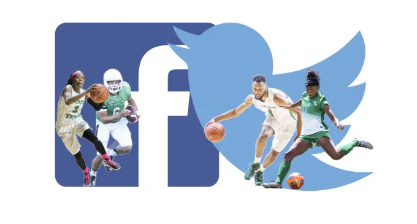

The tendency of the fear of missing out (FOMO) in young adults emerged alongside the rise of social media, also the
unrealistic expectations that social media presents to students and young adults. FOMO might make you believe that your friends
are living more interesting or happy lives than you are. It's frequent among college students, especially when they don't have plans
but see all of their pals blogging about how amazing they are. According to CNN Student News “FOMO has become a bigger concern for
younger people these days than before. FOMO is experienced by 56% of social media users and 69% of millennials.” When people see other
social media users' highlight reels, they frequently experience FOMO. They become anxious when they learn that others are having
rewarding experiences without them. Browsing social media prepares a person for FOMO, even if social media isn't the main cause of FOMO.
To be able to fix your issue and detach yourself from social media you will have to be able to first reduce the amount of time
that you spend online. According to social media and mental health, “ A 2018 University of Pennsylvania study found that reducing social
media use to 30 minutes a day resulted in a significant reduction in levels of anxiety, depression, loneliness, sleep problems, and FOMO.”
you hear that just being able to not take a look on social media for less than 30 seconds than you already do will improve how you feel about yourself. Another solution you can try is to change up your focus. Instead of worrying about what's on social media change your focus to something that can be beneficial to you, and better your life.